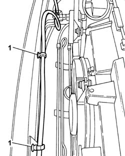
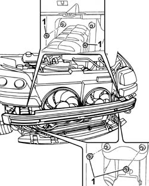
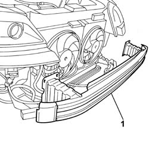

7210A18 FRONT CROSSMEMBER
- Path
- Procedures > 72 PANELS AND FRAME > 7210 REMOVING REFITTING > 7210A STRUCTURAL ELEMENTS (FRONT PART) > 7210A18 FRONT CROSSMEMBER
- Kind
- repair procedure (removal / refitting; the operation number is the code)
- Applies to
- all engines; all production periods
- Interactive page
- https://sloeber94.github.io/elrnDB-fUlss/en/#/179007955
Applies to: all engines; all production periods
 Removing
Removing
 Refitting
Refitting- Position the vehicle on a lift.
Op. 4450B12 FRONT OR REAR WHEELS (TWO) - R+R
Op. 7055B90 LEFT FRONT WHEEL ARCH LINER - R.R.
Op. 7055B91 RIGHT FRONT WHEEL ARCH LINER - R.R.
1. Release the headlamp washer pipe from the retaining clips on the crossmember.

Applies to: all engines; all production periods
1. Undo the nuts fixing the crossmember to the front bodyshell struts.

Applies to: all engines; all production periods
1. Remove the front crossmember.

Applies to: all engines; all production periods
Refitting
Removing- Fit the front crossmember.
- Attach the headlamp washer pipe to the retaining clips.
- Tighten the nuts fixing the crossmember to the front bodyshell struts.
Op. 7055B91 RIGHT FRONT WHEEL ARCH LINER - R.R.
Op. 7055B90 LEFT FRONT WHEEL ARCH LINER - R.R.
Op. 4450B12 FRONT OR REAR WHEELS (TWO) - R+R
- Remove the vehicle from the lift.